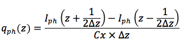
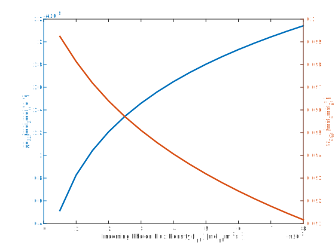
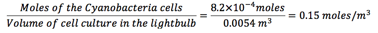

- Determine the concentration of Cyanobacteria cells required in the LIT lightbulb
- Determine the concentration of E.coli cells require in the LIT lightbulb
- Determine the optimal dimesnsions for the LIT lightbulb
- Determine the optimum incoming light intensity required to maximise the production of glucose from the Cyanobacteria
‘OptoFlux: Making designing a breeze’
A mathematical model that optimizes object dimensions to maximize their productivity
The Science behind the LIT lightbulb
OptoFlux is a mathematical model that determines the optimum dimensions for our LIT lightbulb
in order to maximise the luminescence produced from our optogenetic technology.
Our LIT lightbulb is powered by the co-culture of photosynthesising Cyanobacteria cells and luminescing E.coli cells.
In order to maximise the amount of luminescence our E.coli cells can produce we need to maximise the amount of photosynthesis
taking place by the Cyanobacteria cells. Essentially, when the Cyanobacteria cells respire they produce glucose which is
then taken up by the E.coli cells to produce luminescence. OptoFlux ensures that photosynthesis is occurring at the same rate
in all the cells regardless of their position in the lightbulb. In order to ensure this the same light intensity will reach all the cells
a optimal diameter, which would minimise shading effects, would need to be used for our LIT lightbulb. The dimensions
we achieved from OptoFlux enabled us to create a 3D model of our LIT lightbulb in AutoCAD.
Schematic of the co-culture in the LIT lightbulb:

In order to to model the luminescence produced from our LIT lightbulb we considered two aspects:
firstly the amount glucose produced from the Cyanobacteria cells for the E.coli cells; and secondly the number of
E.coli cells we require in order to produce a high enough luminescence to compete with a conventional 160W lightbulb.
We started off by developing our OptoFlux model in order to maximize the amount of glucose produced from our Cyanobacteria
cells. We then calculated the number of E.coli cells that would be required to produce a high enough
luminescence to compete with a 160W lightbulb. We concluded by evaluating whether the maximum amount of
glucose that could be produced from the Cyanobacteria would be enough to culture the required number
of E.coli cells.
Breakdown of the steps involved in the OptoFlux model:
- 1. Incoming Photon Flux Density (Iph) at the edge of the lightbulb that is closest to the light source
- 2. Iph at each position in the lightbulb
- 3. Rate of photon uptake by the cells at each position in the lightbulb
- 4. Average sugar production rate at each position in the lightbulb
Model Aims
Modelling steps
1.) Incoming Photon Flux Density (Iph) at the edge of the lightbulb closest to the light source
We determined the number of photons entering our LIT lightbulb by employing the Planck-Einstein relationship, this
enabled us to use radiometric units to quantify the number of photons entering our LIT bulb. We only focused on quantifying the Iph within the Phostosynthetically
Active Radiation (PAR) part of the light spectrum, as those are the only light wavelengths used for photosynthesis.
Through quantifying the number of photons entering our LIT lightbulb we had the ability to determine the levels of photosynthesis
that could take place by our Cyanobacteria cells.
Legend:
Iphλ = The Incoming photon flux density at a particular wavelength (λ) of light
Iph = The total Incoming photon flux density over the PAR light spectrum
Enl = The amount of light absorbed by the Cyanobacteria cells at different Iph values
2.) Iph at each position in the lightbulb
We then decided to divide the lightbulb into a number of imaginary segments (z),
we determined the Iph for each imaginary segment of our LIT lightbulb. This would enable us to evaluate the number of photons
available for the photosynthesis of our Cyanobacteria cells at each position within the lightbulb.

Legend:
αx,λ = Specific light absorption coefficient for Cyanobacteria cells
Cx = Cyanobacteria biomass concentration in the LIT lightbulb
z = Location in the lightbulb
AF= Accumulation Factor (accounts for the photoaccumulation state of the cells)
Δλ= Wavelength intervals
3.) Rate of photon uptake by the cells at each position in the lightbulb
In order to determine the photon uptake rate at each position in the LIT lightbub, we decided to use forward and backward finite differences to solve our differential equation describing the photon uptake rate. The finite differences allowed us to estimate an approximation of the Iph at each position in the LIT lightbulb.
Legend:
Δz = Distance between two positions in the LIT lightbulb
qph(z) = Rate of photon uptake by the Cyanobacteria cells at each position in the LIT lightbulb
4.) Average sugar production rate at each position in the lightbulb

In order to determine the average sugar production rate within the LIT lightbulb we needed to determine
the specific sugar production rate and the yield of biomass on sugar at each position in the LIT lightbulb.
Our first step was to determine the specific sugar production rate at each position of the LIT lightbulb:

Legend:
qsc(z)= Specific sugar production rate at each position in the LIT lightbulb
qs,mc(z) = Maximal sugar production rate in the cells
Yphmc = Maximal yield of sugar on photons

Legend:
Ysph(z)= Yield of biomass on sugar at every position in the LIT lightbulb
Legend:
qs averagec= Average sugar production rate
OptoFlux Results
Using our OptoFlux model, we determined the optimal dimensions, Cyanobacteria concentration and Incoming Photon Flux Density required to maximize the sugar production from our Cyanobacteria cells.
Optimising the diameter of the LIT lightbulb
In order to determine the optimum diameter for the LIT lightbulb we decided to focus on two aspects, the amount of sugar produced and the yield of sugar on biomass for each diameter tested.
| Parameter | Inputted values |
|---|---|
| Concentration of Cyanobacteria cells in the LIT lightbulb (mol/m3) | 1 |
| Incoming Photon Flux Density (mol/m2s-1) | 5E-03 |
Figure 1: Outlines the parameters that were inputted into OptoFlux to optimize the diameter of the lightbulb

Figure 2: Demonstrates the effect increasing the diameter of the lightbulb has on the average sugar production rate and the
yield of biomass on sugar
From Figure 1 we determined that as the diameter of the LIT lightbulb increases the average sugar production rate
decreases. This is something we anticipated, as when you increase the diameter of the lightbulb you are also increasing the area in which the Cyanobacteria cells may
position themselves. Therefore, due to the uncertainty associated with the distribution of the cells along the diameter
of the lightbulb there may be additional shading effects. This would result in less light being able to reach all the cells in the cell culture.
Interestingly, the yield of biomass on sugar increases as the diameter of the LIT lightbulb increases. This could be due to the fact that there is a larger lightbulb surface area
for the incoming light to penetrate, thus a greater amount of light can enter the lightbulb.
| Parameters | Optimised values |
|---|---|
| Average sugar production rate (qs average) (molsmolx-1s-1) | 9.8E-05 |
| Yield of biomass on sugar (Ys/ph) (molsmolph-1) | 1E-01 |
| LIT lighbulb Diameter (m) | 9.8E-02 |
Figure 3: Outlines the optimised diameter for the LIT lightbulb
Optimising the concentration of the Cyanobacteria cells in the LIT lightbulb
In order to determine the optimum Cyanobacteria cell concentration for the LIT lightbulb focused on two aspects: the amount of sugar produced; and the yield of sugar on biomass for each diameter tested.
| Parameter | Inputted values |
|---|---|
| Diameter of the lightbulb | 9.8E-02 |
| Incoming Photon Flux Density (mol/m2s-1) | 5E-03 |
Figure 4: Outlines the parameters that were inputted into OptoFlux to optimize the Cyanobacteria concentration of the lightbulb

Figure 5: Demonstrates the effect changing the Cyanobacteria concentration has on the average sugar production rate and the yield of biomass on sugar
From Figure 5 it is evident that as the concentration of Cyanobacteria in the LIT lightbulb increases the average rate of sugar production decreases. If the concentration of cells in the lightbulb increases, the number of cells found in the lightbulb increases. This causes the the viscosity of the cell culture in the lightbulb to increase. Therefore, it becomes harder for light to penetrate the cell culture and reach cells that are found further inside the lightbulb. As such, the average sugar production rate in the LIT lightbulb decreases. The yield of biomass on sugar increases as the concentration of Cyanobacteria cells increases. This occurs because, if the number of cells in the lightbulb increases then there are a larger number of cells photosynthesising. This results in a larger amount of sugar being produced.
| Parameters | Optimised values |
|---|---|
| Average sugar production rate (qs average) (molsmolx-1s-1) | 6.2E-06 |
| Yield of biomass on sugar (Ys/ph) (molsmolph-1) | 9.7E-02 |
| Concentration of Cyanobacteria cells (mol m3) | 100 |
Figure 6: Outlines the optimised Cyanobacteria concentration for the LIT lightbulb
Optimising the Incoming Photon FLux density (Iph) for the LIT lightbulb
To optimize the incoming Iph for the LIT lightbulb we focused on two aspects: the amount of sugar produced; and the yield of sugar on biomass.
| Parameter | Inputted values |
|---|---|
| Diameter of the lightbulb (m) | 9.8E-02 |
| Concentration of Cyanobacteria cells (mol/m3) | 100 |
Figure 6: Outlines the parameters that were inputted into OptoFlux to optimize the Cyanobacteria concentration of the lightbulb
Figure 7: Demonstrates the effect increasing the Iph has on the average sugar production rate and the
yield of biomass on sugar
From Figure 7 it is apparent that as the Iph for the LIT lightbulb increases the average sugar production rate increases. This occurs
because by increasing the Iph for the lightbulb, essentially the number of photons entering the lightbulb increases. Therefore, a larger number of photons are available for photosynthesis.
This photon increase helps overcome any shading effects present in the LIT lightbulb and allows for more cells to photosynthesise.
The yield of biomass per photon decreases, as since the number of photons available increases once the saturation point is met the remaining
photons will not be utilised by the cells for photosynthesis. The best Iph was identified as the point at which the graphs intersect. Although
past the point of intersection the average sugar production rate increases there is such a significant decrease in the yield of sugar per photon the best trade-off between the two
variables is identified as the point of intersection.
| Parameters | Optimised values |
|---|---|
| Average sugar production rate (qs average) (molsmolx-1s-1) | 1.3E-05 |
| Yield of biomass on sugar (Ys/ph) (molsmolph-1) | 9.5E-02 |
| Incoming Photon Flux Density (mol/m2s-1) | 2.5E-03 |
Figure 8: Outlines the optimised Iph for the LIT lightbulb
OptoFluxes optimised conditions for the LIT lightbulb
From the OptoFlux model we were able to optimize the conditions within our LIT lightbulb to maximise the amount of sugar produced from our Cyanobacteria cells.
| Parameters | Optimised values |
|---|---|
| Diameter of lightbulb (m) | 9.8E-02 |
| Concentration of Cyanobacteria cells (mol/m3) | 100 |
| Incoming Photon Flux Density (mol/m2s-1) | 2.5E-03 |
Analytically optimising the concentraiton of E.coli cells in the LIT lightbulb
We optimized the concentration of E.coli cells in our LIT lightbulb to ensure
a luminescence equivalent to a 160W lightbulb would be produced. In order to do so we follow two main steps:
1.) Determine the number of E.coli cells required to produce the required luminescence
2.) Determine the number of Cyanobacteria cells required to produce sufficient levels of glucose
to co-culture the desired number of E.coli cells
3.) Determine the concentration of Cyanobactria cells required in the lightbulb
From literature we determined that each E.coli cell produces a luminescence equivilant to 104 photons/s. A 160 W lighbulb produces a luminescence of 1018 photons/s. Therefore:

The ratio of E.coli to Cyanobacteria cells required to maintain a co-culture is:
107 E.coli cells to 108 Cyanobacteria cells. Therefore:

In order to determine the Cyanobacteria cells concentration we calculated the mass of the Cyanobacteria cells in order to find the moles of the Cyanobacteria cells. This enabled us to determine the concentration of Cyanobacteria cells present in the LIT lightbulb.
Interested in the breakdown of steps? Click away
The OptoFlux lightbulb design has the capacity to culture up to 100 mol/m3 of Cyanobacteria cells. Therefore, as for our LIT lightbulb we require a Cyanobacteria concentration of 0.15 mol/m3 the OptoFlux design is suitable for our culture.
We decided to create a prototype of our LIT lightbulb with the dimensions we generated from our OptoFlux model.
OptoFlux Assumptions
- Light will only hit the lightbulb from one side
- The dimension diameter in Optoflux represents the longest distance light will need travel through the lightbulb
- E.coli cells and Cyanobacteria cells are homogeneously distributed within the lightbulb
- As blue light activates the luminescence of the E.coli cells, the absorption coefficients for Cyanobacteria were taken at 450nm (13 m2mol-1)
- The effects of light scattering, including refleciton and refraction, are neglected
- All cells in the cell culture are in their exponential growth phase
OptoFlux Parameters

LEGIT Initial Conditions

Bibliography
Thereza, C., Marina, I., Luciana.Cambricoli, d. and Olivia, C. (2004). Expression of green fluorescent protein (GFPuv) in Escherichia coli DH5-a, under different growth conditions. African Journal of Biotechnology, 3(1), pp.105-111.
Wlab.ethz.ch. (2017). Cell Surface Protein Atlas. [online] Available at: http://wlab.ethz.ch/cspa/#abstract [Accessed 4 Sep. 2017].
Sciencedirect.com. (2017). Membrane integration of E. coli model membrane proteins - ScienceDirect. [online] Available at: http://www.sciencedirect.com/science/article/pii/S0167488904000813 [Accessed 4 Sep. 2017].
Arun KH e. Green fluorescent proteins in receptor: an emerging tool for drug discovery. – PubMed –NCBI [Internet]. Ncbi.nlm.gov.2017 [cited 21 August 2017]. Available from: https://www.ncbi.nlm.nih.gov/pubmed/15596111
[internet] UVGermicidalTechnicalData. [cited 10 September 2017] http://www.pveducation.org/pvcdrom/effect-of-light-intensity (accessed 10 September 2017).
Jayaraman, P., Devarajan, K., Chua, T. K., Zhang, H., Gunawan, E. and Loo Poh, C. Blue light-mediated transcriptional activation and repression of gene expression in bacteria. NCBI. 2016;44(14):6994–7005.
Philips, Ron. "Cell Biology By The Numbers." Book.bionumbers.org. N.p., 2017. Web. 10 Sept. 2017.
Kiparissides, Alexandros et al. "Modelling The Delta1/Notch1 Pathway: In Search Of The Mediator(S) Of Neural Stem Cell Differentiation." PLoS ONE 6.2 (2011): e14668. Web.